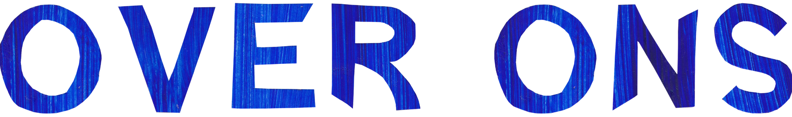

Het Onderwater Theater is een korte stop-motion kinderfilm en educatief project dat het label verlegenheid onderzoekt. In een wereld waarin extraversie vaak de norm is, nodigt het project kinderen uit om nieuwe, bij hun individu passende expressievormen te ontdekken.
Via een kleurrijke handgemaakte onderwaterwereld volgen we Billy, een meisje dat ontdekt dat ze zich niet hoeft aan te passen aan de norm om zichzelf te uiten en begrepen te worden. Het project wil ruimte maken voor verschillende manieren van zijn en biedt kinderen herkenning, verbeelding en nieuwe vormen van expressie.
Esther is de schrijver en producer. Vanuit haar persoonlijke ervaringen onderzoekt zij hoe kunst kan bijdragen aan mentale gezondheid en bewustwording. Voor Het Onderwater Theater ontwikkelt zij eveneens het aansluitende educatieprogramma.
Sasha is de regisseur en stop-motion animator. Zijn werk kenmerkt zich door kleurrijke, handgemaakte beeldwerelden waarin kwetsbaarheid en verbeelding samenkomen. Voor Het Onderwater Theater ontwikkelt hij de visuele wereld en realiseert hij de animatie.
Veel kinderen krijgen al vroeg labels zoals 'verlegen'. Hoewel dat onschuldig lijkt, beïnvloeden zulke woorden vaak hoe kinderen naar zichzelf kijken. Het Onderwater Theater wil het gesprek verschuiven: weg van tekort, richting nieuwsgierigheid, gevoeligheid en de kracht van de binnenwereld.